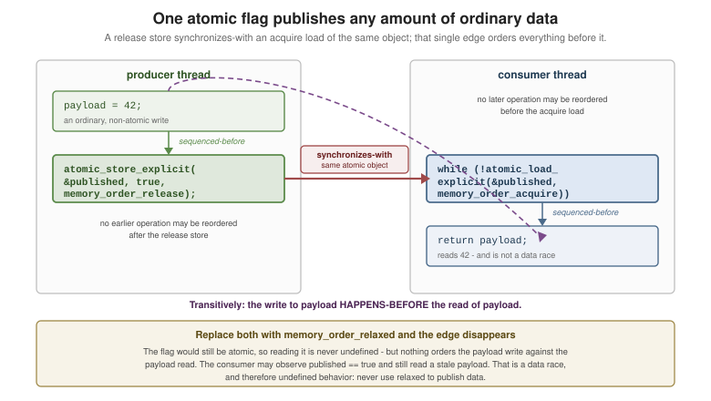

Atomics and Memory Consistency
|
This content was generated with the assistance of AI and should be verified against the official documentation before being relied on in production. |
Mutexes make a critical section exclusive. Atomics make a single operation on a single object indivisible, without a lock — and, just as importantly, let you specify how memory operations around it become visible to other threads. That second part is the memory model, and it is the subtlest area of the language.
<stdatomic.h> is optional: check __STDC_NO_ATOMICS__.
Data Races and the Memory Model
Two threads accessing the same object, at least one of them writing, with no synchronization between them, is a data race — undefined behavior, full stop. The value read is not "one of the two"; the program has no defined meaning at all.
The reason is that neither the compiler nor the CPU executes your loads and stores in source order. Both reorder freely, subject only to what a single thread can observe. Atomics are how you constrain that.
#include <stdatomic.h>
#include <stdio.h>
int main(void)
{
#ifdef __STDC_NO_ATOMICS__
puts("this implementation has no atomics");
#else
// Three equivalent spellings of an atomic int:
_Atomic int a = 0;
atomic_int b = 0; // the typedef from <stdatomic.h>
_Atomic(int) c = 0;
atomic_store(&a, 1);
atomic_store(&b, 2);
atomic_store(&c, 3);
printf("%d %d %d\n", atomic_load(&a), atomic_load(&b), atomic_load(&c));
// Is it lock-free, or does the implementation fall back to a hidden mutex?
printf("int lock-free: %d, pointer lock-free: %d\n",
(int)atomic_is_lock_free(&a), (int)ATOMIC_POINTER_LOCK_FREE);
#endif
return 0;
}Atomic Operations
#include <stdatomic.h>
#include <stdio.h>
#include <threads.h>
static atomic_int counter = 0;
static atomic_bool ready = false;
static int worker(void *arg)
{
(void)arg;
for (int i = 0; i < 100000; ++i) {
// Read-modify-write, indivisibly. This is the whole point: ++counter on a
// plain int is three steps and races; atomic_fetch_add is one.
atomic_fetch_add(&counter, 1);
}
return 0;
}
int main(void)
{
thrd_t a, b;
if (thrd_create(&a, worker, nullptr) != thrd_success) {
return 1;
}
if (thrd_create(&b, worker, nullptr) != thrd_success) {
thrd_join(a, nullptr);
return 1;
}
thrd_join(a, nullptr);
thrd_join(b, nullptr);
atomic_store(&ready, true);
// Note: an _Atomic object also supports the ordinary operators, which are
// shorthand for the seq_cst versions of these calls.
++counter;
printf("counter = %d, ready = %d\n", atomic_load(&counter), (int)atomic_load(&ready));
return 0;
}The operation set:
| Operation | Meaning |
|---|---|
|
Write |
|
Read atomically. |
|
Store |
|
Read-modify-write, returning the previous value. |
|
If |
|
The same, but may fail spuriously — so it is only usable inside a loop, where it is cheaper on some architectures. |
|
The only operations guaranteed lock-free on every implementation. |
|
A standalone barrier, with no associated object. |
Compare-and-Exchange
CAS is the general-purpose primitive: any read-modify-write you can express as "compute a new value from the old one, install it if nothing changed" becomes lock-free with it.
#include <stdatomic.h>
#include <stdio.h>
// Atomically apply a function to an atomic value -- the canonical CAS loop.
static int atomic_multiply(atomic_int *value, int factor)
{
int expected = atomic_load(value);
int desired;
do {
desired = expected * factor;
// On failure, compare_exchange RELOADS the current value into expected,
// so the loop recomputes from the fresh value. weak may also fail
// spuriously, which is harmless inside this loop.
} while (!atomic_compare_exchange_weak(value, &expected, desired));
return desired;
}
// A lock-free maximum: only install a larger value.
static void atomic_max(atomic_int *value, int candidate)
{
int expected = atomic_load(value);
while (candidate > expected) {
if (atomic_compare_exchange_weak(value, &expected, candidate)) {
return;
}
// expected now holds whatever another thread installed; re-test the
// condition rather than blindly retrying.
}
}
int main(void)
{
atomic_int value = 5;
printf("%d\n", atomic_multiply(&value, 3)); // 15
atomic_max(&value, 10);
printf("%d\n", atomic_load(&value)); // 15, unchanged
atomic_max(&value, 20);
printf("%d\n", atomic_load(&value)); // 20
return 0;
}The rule that catches everyone: on failure, compare_exchange overwrites expected with the current value.
That is what makes the loop converge — and why re-loading expected yourself inside the loop is wrong.
atomic_flag — A Spinlock
atomic_flag is the only type guaranteed lock-free everywhere, which makes it the primitive for a spinlock:
#include <stdatomic.h>
#include <stdio.h>
#include <threads.h>
// ATOMIC_FLAG_INIT is the only correct initializer.
static atomic_flag spinlock = ATOMIC_FLAG_INIT;
static long shared_total = 0;
static void spin_lock(void)
{
// test_and_set returns the PREVIOUS value: true means someone else holds it.
while (atomic_flag_test_and_set_explicit(&spinlock, memory_order_acquire)) {
thrd_yield(); // do not burn the core; a real spinlock backs off
}
}
static void spin_unlock(void)
{
atomic_flag_clear_explicit(&spinlock, memory_order_release);
}
static int worker(void *arg)
{
(void)arg;
for (int i = 0; i < 50000; ++i) {
spin_lock();
++shared_total; // a plain long: the spinlock provides the exclusion
spin_unlock();
}
return 0;
}
int main(void)
{
thrd_t a, b;
if (thrd_create(&a, worker, nullptr) != thrd_success) {
return 1;
}
if (thrd_create(&b, worker, nullptr) != thrd_success) {
thrd_join(a, nullptr);
return 1;
}
thrd_join(a, nullptr);
thrd_join(b, nullptr);
printf("total = %ld (expected 100000)\n", shared_total);
return 0;
}Use a mtx_t rather than a spinlock unless the critical section is a handful of instructions and you have
measured a win: a spinlock burns CPU while waiting and behaves badly when the holder is descheduled.
Happens-Before
The memory model is built on one relation: happens-before. If A happens-before B, then everything A wrote is visible to B. Without such a relation between two accesses to the same object, you have a data race.

The edges that create it:
-
Program order within one thread (sequenced-before).
-
A release store synchronizing-with an acquire load of the same atomic object — the most important one, and the one drawn above.
-
thrd_create(everything before the call happens-before the thread’s first action) andthrd_join(everything the thread did happens-before the join returns). -
mtx_unlocksynchronizing-with a latermtx_lockof the same mutex. -
call_once— the initializer happens-before every return fromcall_once.
#include <stdatomic.h>
#include <stdio.h>
#include <threads.h>
static int payload = 0; // a PLAIN int -- deliberately
static atomic_bool published = false;
static int producer(void *arg)
{
(void)arg;
payload = 42; // 1. ordinary write
atomic_store_explicit(&published, true, memory_order_release); // 2. release
return 0;
}
static int consumer(void *arg)
{
(void)arg;
// 3. acquire: if it reads true, it synchronizes-with the release above,
// so write 1 happens-before this thread's read of payload.
while (!atomic_load_explicit(&published, memory_order_acquire)) {
thrd_yield();
}
return payload; // 4. safely 42, no race
}
int main(void)
{
thrd_t p, c;
if (thrd_create(&c, consumer, nullptr) != thrd_success) {
return 1;
}
if (thrd_create(&p, producer, nullptr) != thrd_success) {
thrd_join(c, nullptr);
return 1;
}
int seen = 0;
thrd_join(p, nullptr);
thrd_join(c, &seen);
printf("consumer saw %d\n", seen);
return 0;
}That payload is a plain int and yet race-free is the entire value of release/acquire: one atomic flag
publishes an arbitrary amount of ordinary data.
Memory Orders
| Order | Guarantee |
|---|---|
|
The default. A single total order of all seq_cst operations, consistent with program order in every thread. Easiest to reason about, most expensive. |
|
On a load: no later operation in this thread may be reordered before it. Pairs with a release. |
|
On a store: no earlier operation in this thread may be reordered after it. Pairs with an acquire. |
|
Both, for read-modify-write operations. |
|
Atomicity only — no ordering with respect to anything else. Correct for independent counters and statistics, and for nothing that publishes data. |
|
A weaker acquire based on data dependency. Its specification is known to be
defective; every implementation treats it as |
#include <stdatomic.h>
#include <stdio.h>
#include <threads.h>
// A statistics counter nobody synchronizes on: relaxed is correct AND cheaper.
static atomic_long events = 0;
static int worker(void *arg)
{
(void)arg;
for (int i = 0; i < 10000; ++i) {
// Relaxed: we need the total to be right, not to order anything else.
atomic_fetch_add_explicit(&events, 1, memory_order_relaxed);
}
return 0;
}
int main(void)
{
thrd_t a, b;
if (thrd_create(&a, worker, nullptr) != thrd_success) {
return 1;
}
if (thrd_create(&b, worker, nullptr) != thrd_success) {
thrd_join(a, nullptr);
return 1;
}
thrd_join(a, nullptr);
thrd_join(b, nullptr);
// The joins give us the happens-before edge, so this read is well-ordered.
printf("events = %ld\n", atomic_load_explicit(&events, memory_order_relaxed));
return 0;
}The guidance that survives contact with real code:
-
Start with the default. Plain
atomic_load/atomic_store/atomic_fetch_addareseq_cstand are correct by construction. On x86 the cost is small. -
Use release/acquire when you have measured a need, and always in pairs on the same object — an unpaired release orders nothing.
-
Use relaxed only for values nothing else depends on: counters, statistics, a "shutdown requested" flag that is re-checked, an ID generator.
-
Never use relaxed to publish a pointer or a buffer. That is the classic bug: the flag is visible before the data it announces.
Fences
A fence orders operations without touching a specific object:
#include <stdatomic.h>
#include <stdio.h>
static int data_a = 0;
static int data_b = 0;
static atomic_bool flag = false;
static void publish(void)
{
data_a = 1;
data_b = 2;
// Everything above is ordered before everything below in this thread.
atomic_thread_fence(memory_order_release);
atomic_store_explicit(&flag, true, memory_order_relaxed);
}
static bool consume(int *out_a, int *out_b)
{
if (!atomic_load_explicit(&flag, memory_order_relaxed)) {
return false;
}
atomic_thread_fence(memory_order_acquire);
*out_a = data_a; // safe: the fences pair up
*out_b = data_b;
return true;
}
int main(void)
{
int a = 0, b = 0;
publish();
printf("%d %d %d\n", (int)consume(&a, &b), a, b);
return 0;
}A fence plus relaxed operations is equivalent to (and occasionally cheaper than) release/acquire on each
operation — but it is harder to read, so prefer the per-operation orders unless profiling says otherwise.
atomic_signal_fence is the variant for ordering with respect to a signal handler in the same thread,
with no CPU barrier at all.
False Sharing
Atomics are coherent per cache line, not per object: two atomics in the same 64-byte line contend even though the code never shares them.
#include <stdalign.h>
#include <stdatomic.h>
#include <stdio.h>
#define CACHE_LINE 64
// Bad: both counters almost certainly share one cache line, so every increment
// by one thread invalidates the other thread's line.
static struct {
atomic_long a;
atomic_long b;
} contended;
// Good: each counter gets its own line.
static struct {
alignas(CACHE_LINE) atomic_long a;
alignas(CACHE_LINE) atomic_long b;
} padded;
int main(void)
{
atomic_store(&contended.a, 1);
atomic_store(&padded.a, 1);
printf("contended: %zu bytes, padded: %zu bytes\n", sizeof contended, sizeof padded);
return 0;
}See Also
-
Threads — mutexes, condition variables and
call_once, whose guarantees are expressed in this memory model. -
Memory Model and Alignment —
alignas, object representation and why the padding above works. -
Performance — when a lock-free design actually wins.
-
Advanced Control Flow —
sig_atomic_tandatomic_signal_fence. -
C++: Async, Futures, and Atomics — C++ shares this memory model and adds futures,
std::asyncand parallel algorithms.
References
-
WG14 N3220 — the C23 working draft (§5.1.2.5 "Multi-threaded executions and data races", §7.17 "Atomics
<stdatomic.h>`", §6.7.4 "Type qualifiers" for `_Atomic). -
GCC manual — Built-in Functions for Memory Model Aware Atomic Operations.